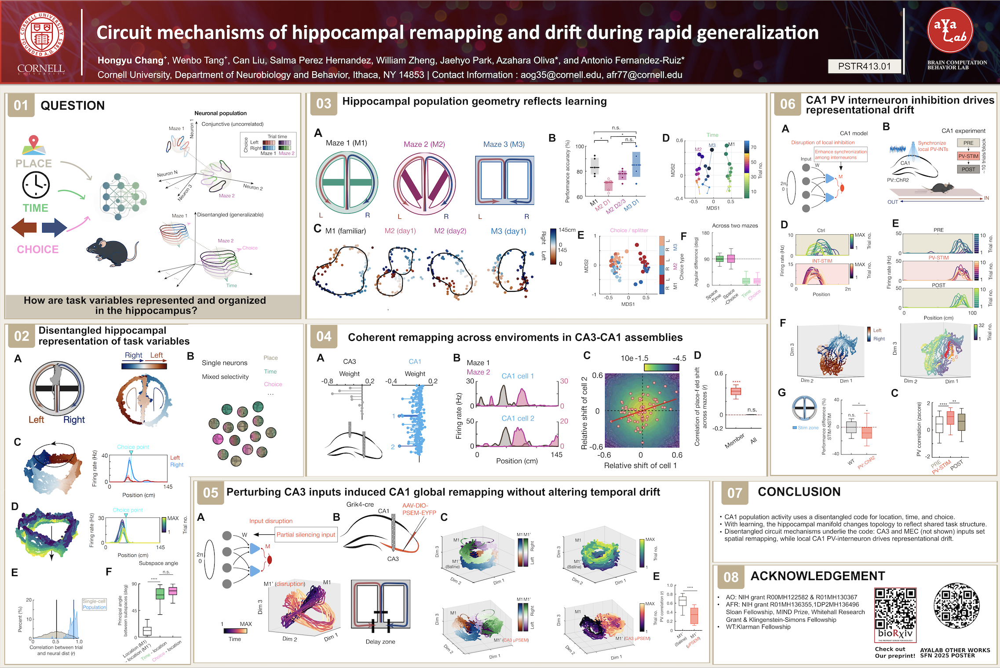

A hippocampal population code for rapid generalization
Pre-print
Abstract
Understanding how the heterogeneous activity patterns of individual neurons give rise to coherent population dynamics and cognition is a central challenge in neuroscience. In the hippocampus, neurons are tuned to spatial location, yet their activity is also modulated by multiple external and internal variables and exhibits apparent random drift over time, making it difficult to link hippocampal computations to behavior. By analyzing the population dynamics of large hippocampal ensembles in behaving mice, we reveal a structured organization underlying the diversity of single-neuron responses: the hippocampus encodes different aspects of experience as disentangled variables represented in the coactivity dynamics of cell assemblies. Using targeted circuit perturbations, we show that temporal and contextual components of this representation are governed by local inhibitory interactions and input-driven cell assembly dynamics, respectively. Our findings reveal the circuit basis of disentangled hippocampal representation, offering a unifying geometric principle of hippocampal coding that supports flexible and efficient memory representations.
Acknowledgment
This project is led by Dr. Tang, W. and Hongyu Chang, under the supervision of Dr. Fernandez-Ruiz, A. and Dr. Oliva, A.
Figures
